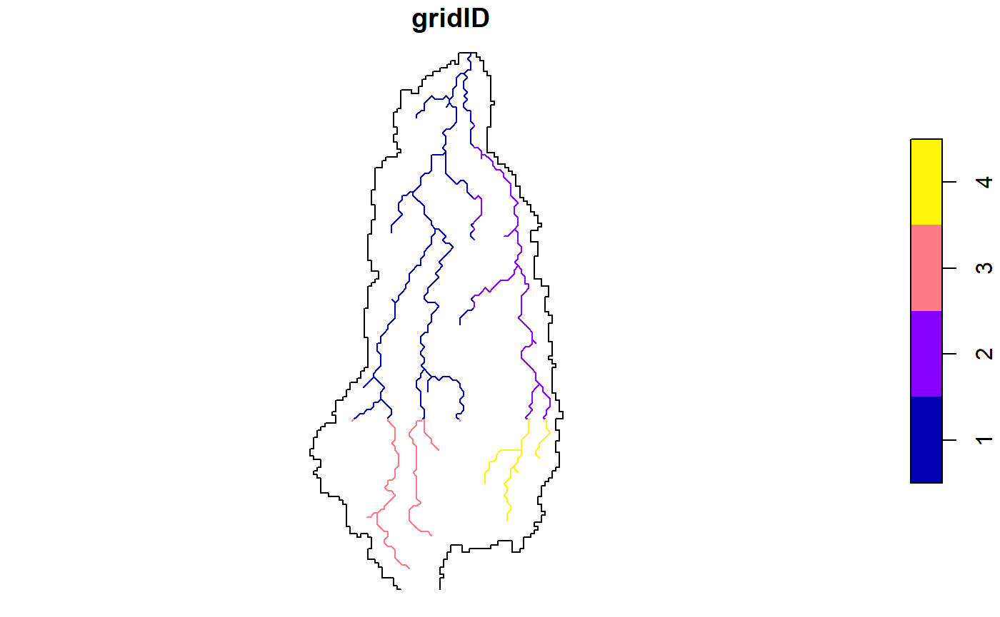
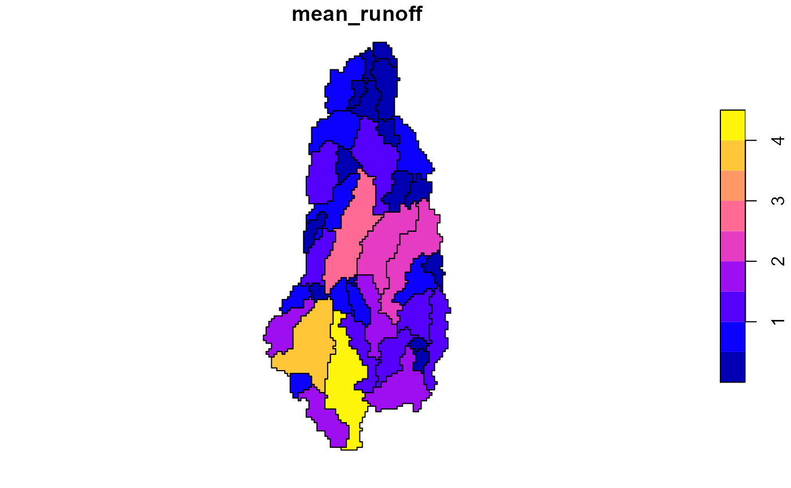
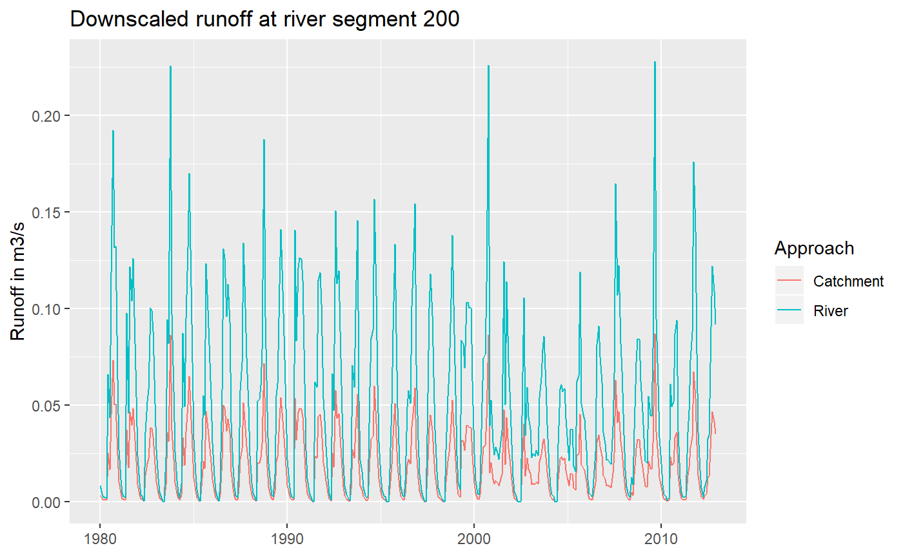
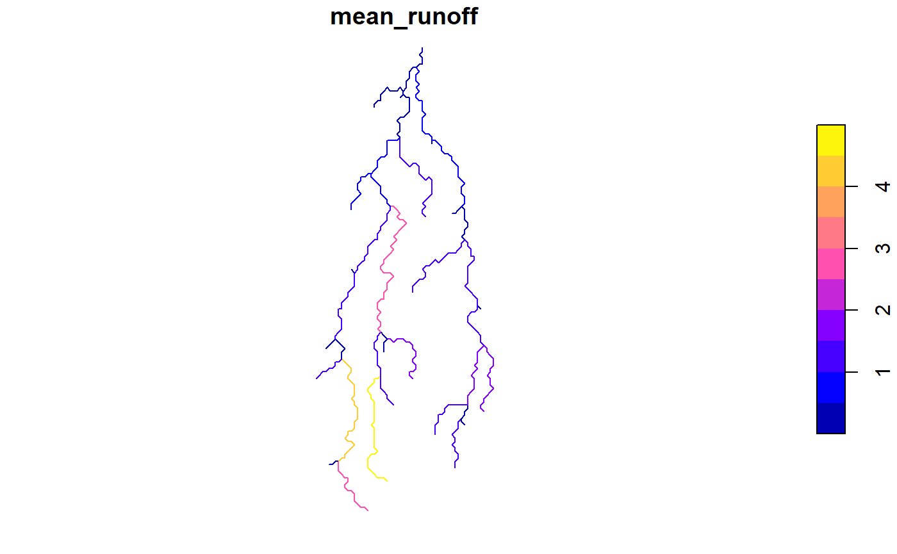
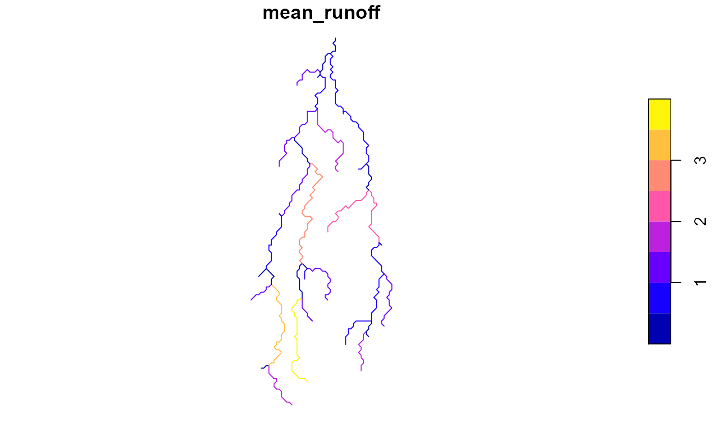

hydrostreamer tutorial
Marko Kallio
2021-01-14
Source:vignettes/hydrostreamer_simple_tutorial.Rmd
hydrostreamer_simple_tutorial.RmdThis tutorial aims to explain the workflow in hydrostreamer and showcase some of it’s capabilities. More specific tutorials will be added in time, which concentrate on different parts of hydrostreamer
Using hydrostreamer
Some example data have been included to the package for tutorial purposes. It includes
1 by 1 degree DEM located in Southeast Asia. The DEM is originally ALOS World 3D at 30 meter resolution (Tanado et al 2014), which has been resampled to 0.005 degree resolution.
1 by 1 degree runoff timeseries in the same area as the DEM. Runoff is sourced from the Linear Optimal Runoff Aggregate (LORA) at 0.5 degree resolution (see Hobeichi et al 2019). The unit of runoff is mm/s (kg/m2/s), and are provided with a monthly timestep.
A river network derived from the provided DEM with 216 river segments.
River segment specific catchment areas, delineated from the provided DEM. Catchments are provided for a subset (n = 41) of the river segments.
Let’s first load the data and inspect it:
library(hydrostreamer)
library(raster)
library(lubridate)
library(dplyr)
library(sf)
data(example_rivers)
data(example_basins)
runoff <- brick(system.file("extdata", "runoff.tif", package = "hydrostreamer"))
dem <- brick(system.file("extdata", "dem.tif", package = "hydrostreamer"))
plot(runoff[[1]])
plot(st_union(basins), add=TRUE)
plot(river, add=TRUE)

hydrostreamer main workflow occurs in three steps:
- Areal interpolation of runoff to explicit river segments
- Routing down the river network to estimate discharge
- Model averaging, if streamflow observations are available.
1. Converting raster runoff to a polygon network
The raster layers are converted to polygons in order to do all the computations using only vector processing, and thus. Each cell of the raster is polygonized, and if an area of interest is provided, the polygons are clipped to it. This removes any unneeded grid cells. The resulting HS object is a standard ‘sf’ object with information about each raster cell. The runoff timeseries can be found in a named list column runoff_ts. The elements are named by the ID, and can be accessed with the ‘$’ notation.
We use raster_to_HS to convert a raster timeseries to a HS object.
source_runoff <- raster_to_HS(runoff,
unit = "mm/s",
date = ymd("1980-01-01"),
timestep = "month",
aoi = st_union(basins),
names = "LORA")
source_runoff
#>
#> Hydrostreamer
#> No. objects: 4
#> No. runoff timeseries: 1
#> Included runoff timeseries: LORA
#>
#> Simple feature collection with 4 features and 2 fields
#> geometry type: POLYGON
#> dimension: XY
#> bbox: xmin: 107.275 ymin: 12.25 xmax: 107.625 ymax: 12.995
#> CRS: +proj=longlat +datum=WGS84 +no_defs
#> # A tibble: 4 x 3
#> zoneID runoff_ts geometry
#> <int> <named list> <POLYGON [°]>
#> 1 1 <tibble [396 x~ ((107.5 12.995, 107.5 12.5, 107.31 12.5, 107.31 12.505~
#> 2 2 <tibble [396 x~ ((107.625 12.5, 107.615 12.5, 107.5 12.5, 107.5 12.995~
#> 3 3 <tibble [396 x~ ((107.31 12.5, 107.5 12.5, 107.5 12.325, 107.495 12.32~
#> 4 4 <tibble [396 x~ ((107.5 12.5, 107.615 12.5, 107.615 12.485, 107.62 12.~
plot(source_runoff)
# access runoff timeseries of the element with ID `2`
source_runoff$runoff_ts$`2`
#> # A tibble: 396 x 2
#> Date LORA
#> <date> [mm/s]
#> 1 1980-01-01 3.548126e-06
#> 2 1980-02-01 1.870791e-06
#> 3 1980-03-01 8.945829e-07
#> 4 1980-04-01 8.163660e-07
#> 5 1980-05-01 5.020849e-07
#> 6 1980-06-01 1.698980e-05
#> 7 1980-07-01 1.985167e-05
#> 8 1980-08-01 2.818044e-05
#> 9 1980-09-01 6.625702e-05
#> 10 1980-10-01 5.431649e-05
#> # ... with 386 more rowsHS objects can also be created from an ‘sf’ (polygon) object and a runoff timeseries using function create_HS.
2. Areal interpolation
The four areal interpolation methods shown here are explained in more detail in our recent (2019) conference paper here. The following figure is from the publication, visualizing the different methods:

Figure 1. Conceptual presentation of the areal interpolation methods and their result. Panel A presents the catchment areas (A1) and ancillary variable (A2) derived from a Digital Elevation Model (A0). Panel B shows the result of applying Areal Interpolation (B1), Dasymetric Mapping (B2), Pycnophylactic Interpolation (B3) and combined Pycnophylactic-Dasymetric Interpolation (B4) to input runoff data (B0).
Area Weighted Interpolation
Hydrostreamer implements several different areal interpolation methods, all of which can be accessed using the interpolate_runoff function. The simplest form implemented in hydrostreamer is Area Weighted Interpolation (AWI), which divides runoff from source zones to target river reaches .
AWI <- interpolate_runoff(source_runoff, basins, riverID = "SEGMENT_ID")
#> although coordinates are longitude/latitude, st_intersects assumes that they are planar
AWI
#>
#> Hydrostreamer
#> No. objects: 41
#> No. runoff timeseries: 1
#> Included runoff timeseries: LORA
#>
#> Simple feature collection with 41 features and 3 fields
#> geometry type: MULTIPOLYGON
#> dimension: XY
#> bbox: xmin: 107.275 ymin: 12.25 xmax: 107.625 ymax: 12.995
#> geographic CRS: WGS 84
#> # A tibble: 41 x 4
#> riverID runoff_ts SEGMENT_ID geom
#> <dbl> <named list> <dbl> <MULTIPOLYGON [°]>
#> 1 56 <tibble [396~ 56 (((107.4025 12.255, 107.4 12.255, 107.4 12.~
#> 2 65 <tibble [396~ 65 (((107.4225 12.255, 107.43 12.255, 107.43 1~
#> 3 67 <tibble [396~ 67 (((107.4875 12.32, 107.485 12.32, 107.485 1~
#> 4 69 <tibble [396~ 69 (((107.3325 12.345, 107.33 12.345, 107.33 1~
#> 5 70 <tibble [396~ 70 (((107.3825 12.355, 107.38 12.355, 107.38 1~
#> 6 77 <tibble [396~ 77 (((107.4875 12.365, 107.485 12.365, 107.485~
#> 7 79 <tibble [396~ 79 (((107.575 12.3925, 107.575 12.39, 107.57 1~
#> 8 83 <tibble [396~ 83 (((107.565 12.4325, 107.565 12.43, 107.56 1~
#> 9 85 <tibble [396~ 85 (((107.5825 12.36, 107.58 12.36, 107.58 12.~
#> 10 88 <tibble [396~ 88 (((107.4625 12.355, 107.46 12.355, 107.46 1~
#> # ... with 31 more rowsThe output contains the columns from basins, added with riverID and runoff timeseries converted to volume (cubic meters per second).
AWI$runoff_ts$`56`
#> # A tibble: 396 x 2
#> Date LORA
#> <date> [m3/s]
#> 1 1980-01-01 0.3404937
#> 2 1980-02-01 0.2878624
#> 3 1980-03-01 0.2563814
#> 4 1980-04-01 0.2465635
#> 5 1980-05-01 0.4716301
#> 6 1980-06-01 2.6837455
#> 7 1980-07-01 2.5424214
#> 8 1980-08-01 3.6900426
#> 9 1980-09-01 5.6477615
#> 10 1980-10-01 2.9908853
#> # ... with 386 more rows
AWI$mean_runoff <- sapply(AWI$runoff_ts, function(x) mean(x$LORA))
plot(AWI[,"mean_runoff"])
Dasymetric Mapping
We can also refine the estimates using a dasymetric variable. Here I assume that more runoff is generated at higher elevations than lower, which may or may not be a good assumptions. It is, however, easy to extract from the DEM.
In dasymetric mapping (DM), the output of area weighted interpolation is further refined by scaling it using an ancillary variable - in this case elevation.
elevation_values <- raster::extract(dem, basins)
basins$elevation <- sapply(elevation_values, mean)
DM <- interpolate_runoff(source_runoff, basins, dasymetric = "elevation",
riverID = "SEGMENT_ID")
#> although coordinates are longitude/latitude, st_intersects assumes that they are planar
DM$mean_runoff <- sapply(DM$runoff_ts, function(x) mean(x$LORA))
plot(DM[,"mean_runoff"])
Pycnophylactic Interpolation
A third possibility is to use Pycnophylactic Interpolation (PP).
source_runoff$mean_runoff <- sapply(source_runoff$runoff_ts, function(x) {
mean(x$LORA)
})
PP <- interpolate_runoff(source_runoff, basins, pycnophylactic = "mean_runoff",
riverID = "SEGMENT_ID")
#> although coordinates are longitude/latitude, st_intersects assumes that they are planar
#> although coordinates are longitude/latitude, st_touches assumes that they are planar
#> although coordinates are longitude/latitude, st_touches assumes that they are planar
PP$mean_runoff <- sapply(PP$runoff_ts, function(x) mean(x$LORA))
plot(PP[,"mean_runoff"])
Combined Pycnophylactic - Dasymetric Interpolation
The fourth option is to use a combination of PP and DM. In this case, PP is first performed instead of AWI, followed by the same scaling process with the dasymetric variable.
PPDM <- interpolate_runoff(source_runoff, basins,
dasymetric = "elevation",
pycnophylactic = "mean_runoff",
riverID = "SEGMENT_ID")
#> although coordinates are longitude/latitude, st_intersects assumes that they are planar
#> although coordinates are longitude/latitude, st_touches assumes that they are planar
#> although coordinates are longitude/latitude, st_touches assumes that they are planar
PPDM$mean_runoff <- sapply(PPDM$runoff_ts, function(x) mean(x$LORA))
plot(PPDM[,"mean_runoff"])
Area-to-Line interpolation
All of the above examples are using catchment areas as the target units where runoff is estimated. However, existing vector-based river network data may not come specified with the DEM they were created with, or the processing steps are not clearly defined. In such cases, delieating the catchment areas for each segment may be difficult or outright impossible. For such cases, hydrostreamer provides the possibility to do interpolation from the source areas to linestrings. In such case, interpolation is based on the length of the linestring instead of the polygon area.
A2L <- interpolate_runoff(source_runoff, river,
riverID = "SEGMENT_ID")
#> although coordinates are longitude/latitude, st_intersects assumes that they are planar
A2L$mean_runoff <- sapply(A2L$runoff_ts, function(x) mean(x$LORA))
plot(A2L[,"mean_runoff"])
# DASYMETRIC MAPPING WITH LINES
river <- dplyr::filter(river, SEGMENT_ID %in% basins$SEGMENT_ID) %>%
dplyr::mutate(elevation = basins$elevation)
A2LDM <- interpolate_runoff(source_runoff, river,
dasymetric = "elevation",
riverID = "SEGMENT_ID")
#> although coordinates are longitude/latitude, st_intersects assumes that they are planar
A2LDM$mean_runoff <- sapply(A2LDM$runoff_ts, function(x) mean(x$LORA))
plot(A2LDM[,"mean_runoff"])
Using both lines and basins
The last example shown here is using both linestrings, and their respective catchment areas. The advantage here is that we can represent the rivers as they are in the network - as connected lines - and still use the catchment areas as a more accurate representation of the runoff produced in the catchment of the segment. In addition, using the lines allows us to use the constant river routing algorithm in the next step instead of only instantaneous routing.
RB <- interpolate_runoff(source_runoff,
river,
basins = basins,
riverID = "SEGMENT_ID")
#> although coordinates are longitude/latitude, st_intersects assumes that they are planar
RB$mean_runoff <- sapply(RB$runoff_ts, function(x) mean(x$LORA))
plot(RB[,"mean_runoff"])
3. Apply river routing
While the runoff generated at each river segment is already useful for many applications, knowing river discharge is often also desirable. hydrostreamer provides two simple river routing algorithms for this purpose: instantaneous routing, useful for e.g. estimating runoff in the entire upstream catchment of each river segment, and constant flow velocity routing.
Each routing method is accessible through the function accumulate_runoff(). Since the catchment provided here is small, and the timestep in runoff is one month, we’ll just use instantaneous routing here. There would be negligible difference between constant velocity and instantaneous routing in this case.
However, we cannot use the catchments-only downscaled runoff here directly because there is no routing information. Since we can derive the routing information for the river lines, we can use that same routing info for the catchments also.
Note that running river_network() is not explicitly necessary, since the routing algorithm does it automatically if it has not been run in advance.
routed_river <- river_network(river, riverID = "SEGMENT_ID")
routed_river
#> Simple feature collection with 41 features and 6 fields
#> geometry type: LINESTRING
#> dimension: XY
#> bbox: xmin: 107.3325 ymin: 12.2975 xmax: 107.6075 ymax: 12.9975
#> geographic CRS: WGS 84
#>
#> Hydrostreamer
#> No. objects: 41
#>
#> # A tibble: 41 x 7
#> riverID NEXT PREVIOUS UP_SEGMENTS SEGMENT_ID geom
#> * <dbl> <nam> <named > <dbl> <dbl> <LINESTRING [°]>
#> 1 56 <dbl~ <dbl [1~ 0 56 (107.4125 12.2975, 107.4~
#> 2 65 <dbl~ <dbl [1~ 0 65 (107.4425 12.3425, 107.4~
#> 3 67 <dbl~ <dbl [1~ 0 67 (107.5475 12.3625, 107.5~
#> 4 69 <dbl~ <dbl [1~ 0 69 (107.3525 12.3675, 107.3~
#> 5 70 <dbl~ <dbl [2~ 2 70 (107.3675 12.3725, 107.3~
#> 6 77 <dbl~ <dbl [1~ 0 77 (107.5175 12.4125, 107.5~
#> 7 79 <dbl~ <dbl [1~ 0 79 (107.5625 12.4275, 107.5~
#> 8 83 <dbl~ <dbl [2~ 2 83 (107.5575 12.4375, 107.5~
#> 9 85 <dbl~ <dbl [1~ 0 85 (107.5925 12.4475, 107.5~
#> 10 88 <dbl~ <dbl [1~ 0 88 (107.4525 12.4575, 107.4~
#> # ... with 31 more rows, and 1 more variable: elevation <dbl>
PPDM$NEXT <- routed_river$NEXT
PPDM$PREVIOUS <- routed_river$PREVIOUS
PPDM$UP_SEGMENTS <- routed_river$UP_SEGMENTS
catchment_discharge <- accumulate_runoff(PPDM, routing_method = "instant")
river_discharge <- accumulate_runoff(RB, routing_method = "instant")
river_discharge
#>
#> Hydrostreamer
#> No. objects: 41
#> No. runoff timeseries: 1
#> Included runoff timeseries: LORA
#> No. discharge timeseries: 1
#> Included discharge timeseries: LORA
#>
#> Simple feature collection with 41 features and 9 fields
#> geometry type: LINESTRING
#> dimension: XY
#> bbox: xmin: 107.3325 ymin: 12.2975 xmax: 107.6075 ymax: 12.9975
#> geographic CRS: WGS 84
#> # A tibble: 41 x 10
#> riverID NEXT PREVIOUS runoff_ts discharge_ts UP_SEGMENTS SEGMENT_ID
#> <dbl> <nam> <named > <named l> <named list> <dbl> <dbl>
#> 1 56 <dbl~ <dbl [1~ <tibble ~ <tibble [39~ 0 56
#> 2 65 <dbl~ <dbl [1~ <tibble ~ <tibble [39~ 0 65
#> 3 67 <dbl~ <dbl [1~ <tibble ~ <tibble [39~ 0 67
#> 4 69 <dbl~ <dbl [1~ <tibble ~ <tibble [39~ 0 69
#> 5 70 <dbl~ <dbl [2~ <tibble ~ <tibble [39~ 2 70
#> 6 77 <dbl~ <dbl [1~ <tibble ~ <tibble [39~ 0 77
#> 7 79 <dbl~ <dbl [1~ <tibble ~ <tibble [39~ 0 79
#> 8 83 <dbl~ <dbl [2~ <tibble ~ <tibble [39~ 2 83
#> 9 85 <dbl~ <dbl [1~ <tibble ~ <tibble [39~ 0 85
#> 10 88 <dbl~ <dbl [1~ <tibble ~ <tibble [39~ 0 88
#> # ... with 31 more rows, and 3 more variables: geom <LINESTRING [°]>,
#> # elevation <dbl>, mean_runoff <dbl>The algorithm adds a new list column discharge_ts, containing the routed discharge estimates.
We can also plot the estimated discharge from the two approaches at segment 200 by accessing the new list column discharge_ts.
plot(catchment_discharge$discharge_ts$`200`, type = 'l')
lines(river_discharge$discharge_ts$`200`, col='red')
title(main = "PPDM discharge in black, and Area-to-Line discharge in red.",
sub = "Unit = m3/s, riverID = `200`")
As seen from the plots, in this catchment the difference between PPDM and Area-to-Line Interpolation is very small. In fact, we’ve found that as the basin size increases, the difference becomes increasingly small. This is particularly true for discharge at a monthly timestep. Larger difference can be expected with a daily timestep and with constant flow velocity routing.
References
T. Tadono, H. Ishida, F. Oda, S. Naito, K. Minakawa, H. Iwamoto : Precise Global DEM Generation By ALOS PRISM, ISPRS Annals of the Photogrammetry, Remote Sensing and Spatial Information Sciences, Vol.II-4, pp.71-76, 2014.
Hobeichi, S., Abramowitz, G., Evans, J., and Beck, H. E.: Linear Optimal Runoff Aggregate (LORA): a global gridded synthesis runoff product, Hydrol. Earth Syst. Sci., 23, 851-870, https://doi.org/10.5194/hess-23-851-2019, 2019.